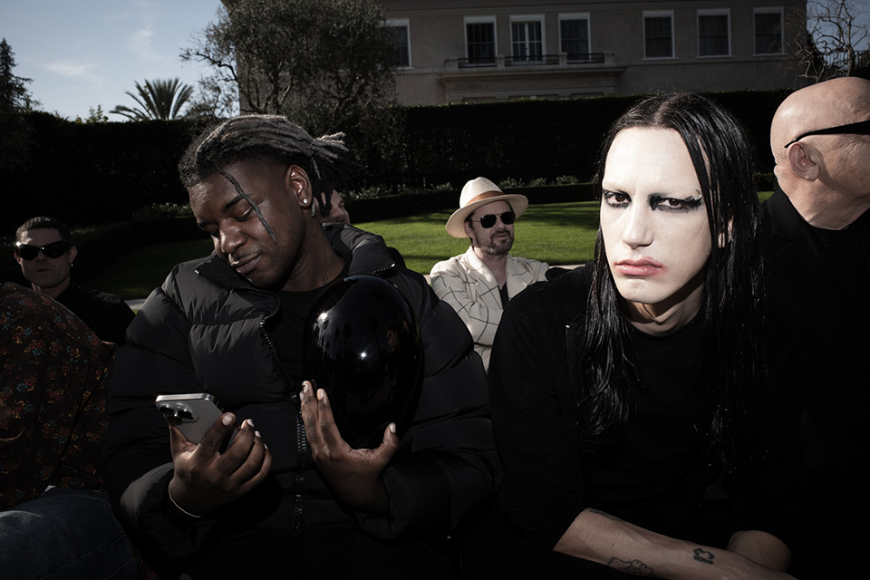

home
insprirations
top fives
my name is elijah banaag
below are a few artist who inspire me
lucki
i find that a majority of my inspirations comes from music, films, youtube,
and artists that I follow on social media. the first artist that inspires
me is lucki, a well-know rapper from chicago. lucki is influential for the
underground hip-hop scene, the thing that pulls me to his music his own style,
no one sounds like. he inspires me to create the way i want to and to be true to myself.
rueguh
the second artist that inspires me is prominent fashion and streetwear brand photographer rueguh.
i found rueguh's work early in his career before he started photographing for brands like adidas, balenciaga and
artists lucki and post malone. following his career is inspiring to me because it shows me the work
i need to put in to get where i want to be.

chandrika
the third artist that inspires me is artist chandrika metivier,
creating installations with performance-theatre, soft sculptures, and text-based paintings on public structures.
metivier's work inspires me because they make installations from personal experiences to illuminate global issues.